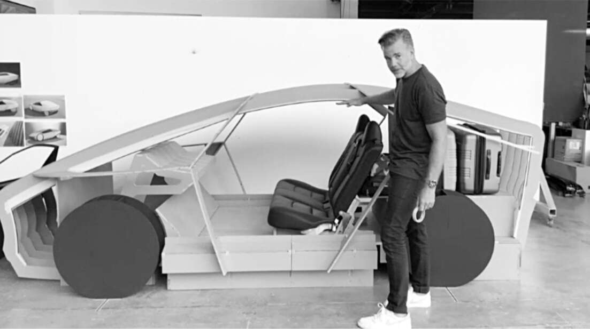

Radar
Musk đã thảo luận với Larry Page về khả năng Tesla và Google hợp tác để xây dựng một hệ thống lái tự động cho phép ô tô tự lái. Nhưng sự rạn nứt của họ về trí tuệ nhân tạo đã thúc đẩy Musk đẩy nhanh kế hoạch để Tesla tự xây dựng một hệ thống.
Chương trình lái tự động của Google, cuối cùng được đặt tên là Waymo, đã sử dụng thiết bị radar laser được gọi là LiDAR, viết tắt của "phát hiện ánh sáng và đo khoảng cách". Musk phản đối việc sử dụng LiDAR và các thiết bị giống radar khác, khẳng định rằng hệ thống tự lái chỉ nên sử dụng dữ liệu hình ảnh từ camera. Đó là một trường hợp của nguyên tắc cơ bản: con người lái xe chỉ sử dụng dữ liệu hình ảnh; do đó máy móc cũng nên làm được như vậy. Đó cũng là một vấn đề về chi phí. Như mọi khi, Musk không chỉ tập trung vào thiết kế của sản phẩm mà còn cả cách sản xuất với số lượng lớn. "Vấn đề với cách tiếp cận của Google là hệ thống cảm biến quá đắt", ông nói vào năm 2013. "Tốt hơn là nên có một hệ thống quang học, về cơ bản là camera với phần mềm có thể tìm ra chuyện gì đang xảy ra chỉ bằng cách nhìn vào mọi thứ."
Trong suốt thập kỷ tiếp theo, Musk liên tục tranh luận với các kỹ sư của mình, nhiều người trong số họ muốn tích hợp radar vào hệ thống tự lái của Tesla. Dhaval Shroff, một kỹ sư trẻ năng động đến từ Mumbai, gia nhập đội Autopilot của Tesla năm 2014 sau khi tốt nghiệp Đại học Carnegie Mellon, nhớ lại một trong những cuộc họp đầu tiên với Musk. "Khi đó xe đã có phần cứng radar, và chúng tôi nói với Elon rằng sử dụng radar là tốt nhất cho sự an toàn", Shroff chia sẻ. "Ông ấy đồng ý cho chúng tôi giữ radar, nhưng rõ ràng là ông ấy nghĩ cuối cùng chúng tôi nên chỉ dựa vào camera."
Đến năm 2015, Musk dành hàng giờ mỗi tuần làm việc với đội ngũ Autopilot. Ông ấy lái xe từ nhà ở Bel Air, Los Angeles đến trụ sở SpaceX gần sân bay để thảo luận về những vấn đề mà hệ thống Autopilot gặp phải. "Mỗi cuộc họp đều bắt đầu bằng câu hỏi của Elon: 'Tại sao xe không thể tự lái từ nhà tôi đến chỗ làm?'", Drew Baglino, một trong những phó chủ tịch cấp cao của Tesla, cho biết.
Điều này đôi khi khiến đội ngũ Tesla phải vất vả xử lý những tình huống dở khóc dở cười. Có một khúc cua trên Quốc lộ 405 luôn khiến Musk gặp rắc rối vì vạch kẻ đường bị mờ. Hệ thống Autopilot thường lệch khỏi làn đường và suýt va chạm với xe ngược chiều. Musk đến văn phòng trong cơn giận dữ. "Hãy làm gì đó để lập trình cho đúng", ông ấy liên tục yêu cầu. Điều này diễn ra trong nhiều tháng khi nhóm cố gắng cải thiện phần mềm Autopilot.
Trong lúc tuyệt vọng, Sam Teller và những người khác đã nghĩ ra một giải pháp đơn giản hơn: yêu cầu sở giao thông sơn lại vạch kẻ đường của đoạn đường cao tốc đó. Khi không nhận được phản hồi, họ nghĩ ra một kế hoạch táo bạo hơn. Họ quyết định thuê một máy sơn đường, ra ngoài lúc 3 giờ sáng, chặn đường cao tốc trong một giờ và sơn lại các làn đường. Họ đã tìm được một máy sơn đường thì cuối cùng ai đó đã liên lạc được với một người hâm mộ Musk tại sở giao thông. Người này đồng ý cho sơn lại vạch kẻ đường nếu anh ta và một vài người khác tại sở được tham quan SpaceX. Teller dẫn họ đi tham quan, họ chụp ảnh cùng nhau, và vạch kẻ đường trên cao tốc đã được sơn lại. Sau đó, hệ thống Autopilot của Musk đã xử lý khúc cua một cách trơn tru.
Baglino là một trong những kỹ sư của Tesla muốn tiếp tục sử dụng radar để bổ sung cho camera. "Có một khoảng cách rất lớn giữa mục tiêu của Elon và những gì có thể thực hiện được", Baglino nói. "Ông ấy không nhận thức đầy đủ về những thách thức." Có lúc, nhóm của Baglino đã phân tích khả năng nhận thức khoảng cách mà hệ thống tự lái cần cho các tình huống như ở biển báo dừng. Xe cần nhìn bao xa về bên trái và bên phải để biết khi nào có thể băng qua an toàn? "Chúng tôi cố gắng trao đổi với Elon để xác định những gì cảm biến cần làm", Baglino nói. "Và đó là những cuộc trò chuyện thực sự khó khăn, bởi vì ông ấy cứ lặp lại rằng con người chỉ có hai mắt và họ có thể lái xe. Nhưng đôi mắt đó được gắn vào cổ, và cổ có thể di chuyển, và mọi người có thể nhìn khắp nơi."
Musk tạm thời nhượng bộ. Ông thừa nhận mỗi chiếc Model S mới sẽ được trang bị không chỉ tám camera mà còn mười hai cảm biến siêu âm cùng radar phía trước có khả năng nhìn xuyên mưa và sương mù. “Hệ thống này cung cấp một cái nhìn toàn cảnh mà người lái không thể có được, quan sát mọi hướng cùng lúc và trên các bước sóng vượt xa khả năng cảm nhận của con người,” trang web của Tesla tuyên bố vào năm 2016. Tuy nhiên, ngay cả khi Musk đã nhượng bộ, rõ ràng ông vẫn không từ bỏ việc phát triển hệ thống chỉ sử dụng camera.
Khi theo đuổi ý tưởng về xe tự hành, Musk đã nhiều lần phóng đại khả năng của Autopilot trên xe Tesla. Điều này rất nguy hiểm; nó khiến một số tài xế nghĩ rằng họ có thể lái xe Tesla mà không cần tập trung nhiều. Ngay cả khi Musk đưa ra những lời hứa hẹn lớn lao vào năm 2016, Tesla đã bị một trong những nhà cung cấp camera của mình, Mobileye, bỏ rơi. Chủ tịch của Mobileye cho biết Tesla đang “liều lĩnh về mặt an toàn”.
Việc xảy ra một số tai nạn chết người liên quan đến Autopilot là điều không thể tránh khỏi, giống như những tai nạn xảy ra khi không sử dụng Autopilot. Musk khẳng định hệ thống này không nên được đánh giá dựa trên việc nó có ngăn chặn được tai nạn hay không mà là dựa trên việc nó có giúp giảm thiểu tai nạn hay không. Đó là một lập luận logic, nhưng nó bỏ qua thực tế cảm xúc rằng một người bị giết bởi hệ thống Autopilot sẽ gây ra nhiều kinh hoàng hơn một trăm cái chết do lỗi của người lái xe.
Trường hợp tử vong đầu tiên được báo cáo liên quan đến Autopilot ở Mỹ xảy ra vào tháng 5 năm 2016. Một tài xế đã thiệt mạng ở Florida khi một xe đầu kéo rẽ trái trước xe Tesla của anh ta. “Cả Autopilot lẫn người lái xe đều không nhận thấy phần hông màu trắng của xe đầu kéo trên nền trời sáng, nên hệ thống phanh đã không được kích hoạt,” Tesla cho biết trong một tuyên bố. Các nhà điều tra tìm thấy bằng chứng cho thấy, vào thời điểm xảy ra tai nạn, người lái xe đang xem phim Harry Potter trên máy tính đặt trên bảng điều khiển. Ủy ban An toàn Giao thông Quốc gia kết luận rằng “người lái xe đã không kiểm soát hoàn toàn chiếc Tesla dẫn đến vụ tai nạn.” Tesla đã thổi phồng khả năng của Autopilot, và người lái xe có thể đã nghĩ rằng anh ta không cần phải tập trung nhiều. Có thông tin về một vụ tai nạn chết người khác, liên quan đến một chiếc Tesla có thể đang ở chế độ Autopilot, đã xảy ra ở Trung Quốc vào đầu năm đó.
Tin tức về vụ tai nạn ở Florida nổ ra khi Musk đang trong chuyến thăm đầu tiên trở lại Nam Phi sau mười sáu năm. Ông ngay lập tức bay trở lại Hoa Kỳ, nhưng không đưa ra bất kỳ tuyên bố công khai nào. Ông có tư duy của một kỹ sư hơn là sự đồng cảm với cảm xúc của con người. Ông không thể hiểu tại sao một hoặc hai cái chết do Tesla Autopilot gây ra lại tạo nên sự phẫn nộ khi có hơn 1,3 triệu ca tử vong giao thông hàng năm. Không ai thống kê những vụ tai nạn đã được ngăn chặn và những sinh mạng đã được cứu bởi Autopilot. Họ cũng không đánh giá việc lái xe với Autopilot có an toàn hơn lái xe mà không có nó hay không.
Musk đã tổ chức một cuộc họp báo qua điện thoại vào tháng 10 năm 2016, và ông đã nổi giận khi những câu hỏi đầu tiên là về hai trường hợp tử vong. Nếu họ viết những câu chuyện khiến mọi người không sử dụng hệ thống lái xe tự động, hoặc khiến các cơ quan quản lý không phê duyệt chúng, “thì các bạn đang giết người.” Ông dừng lại rồi gắt lên, “Câu hỏi tiếp theo.”
Tầm nhìn vĩ đại của Musk – đôi khi giống như ảo ảnh cứ lùi dần về phía chân trời – là Tesla sẽ chế tạo một chiếc xe hoàn toàn tự lái mà không cần bất kỳ sự can thiệp nào của con người. Ông tin rằng điều đó sẽ thay đổi cuộc sống hàng ngày của chúng ta cũng như biến Tesla thành công ty giá trị nhất thế giới. "Lái xe tự động hoàn toàn", như cách Tesla gọi, sẽ có thể hoạt động, Musk hứa hẹn, không chỉ trên đường cao tốc mà còn trên đường phố với người đi bộ, người đi xe đạp và các giao lộ phức tạp.
Cũng như những nỗi ám ảnh khác về sứ mệnh của mình, bao gồm cả việc du hành đến sao Hỏa, ông đã đưa ra những dự đoán phi lý về thời gian. Trong cuộc gọi với các phóng viên vào tháng 10 năm 2016, ông tuyên bố rằng vào cuối năm sau, một chiếc Tesla sẽ có thể lái từ Los Angeles đến New York "mà không cần chạm một lần nào" vào vô lăng. "Khi bạn muốn xe quay lại, hãy nhấn Triệu hồi trên điện thoại của bạn", ông nói. "Nó cuối cùng sẽ tìm thấy bạn ngay cả khi bạn đang ở phía bên kia đất nước."
Điều này có thể bị coi là một tưởng tượng thú vị, ngoại trừ việc ông bắt đầu thúc đẩy các kỹ sư làm việc trên Model 3 và Model Y của Tesla thiết kế các phiên bản không có vô lăng và không có bàn đạp ga và phanh. Von Holzhausen giả vờ đồng ý. Bắt đầu từ cuối năm 2016, luôn có hình ảnh và mô hình vật lý của "Robotaxi" để Musk xem khi ông đi qua xưởng thiết kế. "Ông ấy tin chắc rằng khi chúng tôi đưa Model Y vào sản xuất, nó sẽ là một Robotaxi hoàn chỉnh, hoàn toàn tự động", von Holzhausen nói.
Hầu như mỗi năm, Musk lại đưa ra một dự đoán khác rằng việc lái xe tự động hoàn toàn chỉ còn cách một hoặc hai năm nữa. "Khi nào ai đó có thể mua một trong những chiếc xe của anh và chỉ cần buông tay khỏi vô lăng, đi ngủ và thức dậy thấy rằng họ đã đến nơi?" Chris Anderson hỏi ông tại một buổi TED Talk vào tháng 5 năm 2017. "Khoảng hai năm nữa", Musk trả lời. Trong một cuộc phỏng vấn với Kara Swisher tại Hội nghị Code vào cuối năm 2018, ông nói Tesla đang "trên đà thực hiện điều đó vào năm tới." Đầu năm 2019, ông nhấn mạnh lại. "Tôi nghĩ chúng tôi sẽ hoàn thiện tính năng, Lái xe tự động hoàn toàn, trong năm nay", ông tuyên bố trên một podcast với ARK Invest. "Tôi dám chắc chắn điều đó. Đó không phải là một dấu hỏi."
"Nếu ông ấy bỏ cuộc và thừa nhận rằng sẽ mất nhiều thời gian", von Holzhausen nói vào cuối năm 2022, "thì sẽ không ai ủng hộ nó và chúng tôi sẽ không thiết kế những chiếc xe yêu cầu tính năng tự lái." Trong một cuộc gọi báo cáo thu nhập với các nhà phân tích năm đó, Musk thừa nhận rằng quá trình này khó khăn hơn ông dự kiến vào năm 2016. "Cuối cùng, vấn đề là", ông nói, "để giải quyết việc lái xe tự động hoàn toàn, bạn thực sự phải giải quyết trí tuệ nhân tạo trong thế giới thực."

Franz von Holzhausen với “Robotaxi” đời đầu